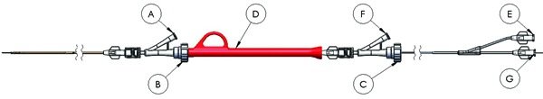

Prepare Arterial InterGraft
Arterial InterGraft system preparation
- Using sterile technique, open AIG package and place InterGraft delivery system in a sterile field.
- Remove the white graft grippers.
-
Attach stopcocks to each of the two T-B ports A, F and open the
valves B, C.

- Close valve C and flush sterile saline through port F.
- Close stopcock on port F and remove 10 cc syringe.
- Close valve B and flush sterile saline through port A.
- Close stopcock on port A and remove 10 cc syringe.
- Flush guidewire lumen through port G using sterile saline.
- Gently tighten T-B valves B, C.
-
Attach stopcock to balloon luer E. Evacuate balloon using a 10 cc
syringe, close stopcock and remove syringe.
- Draw up 50:50 contrast/saline soultion in a 3 cc syringe, attach to stopcock, open stopcock and inject solution.
- Visually confirm positioning balloon inflation.
- Withdraw contrast from the balloon, close the stopcock, and leave 3 cc syringe connected to luer.
- Loosen T-B valves B, C, backload 0.014" wire into AIG delivery system and gently tighten T-B valve B.
- Deliver Arterial InterGraft